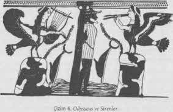

Kahraman, kaderinin ona rehber ve yardımcı olan kişileştirmeleriyle birlikte macerasında, aşırı güç bölgesinin girişindeki “eşik muhafızına gelinceye dek ilerler. Bu tür muhafızlar, kahramanın şu anki alanı ya da yaşam ufkunun sınırlarını belirterek dünyayı dört yönde - ayrıca aşağıda ve yukarıda- sınırlar. Onların ardında karanlık, bilinmeyen tehlike vardır; tıpkı aile gözetiminin dışında kalan çocuğu tehlikelerin beklemesi ve toplumunun koruması olmadan kabile üyesinin tehlikeye düşmesi gibi. Sıradan insan belirli sınırlar içinde kalarak tatmin olmakla yetinmeyip bundan gurur da duyar ve yaygın inançlar, keşfedilmemiş olana atılan ilk adımdan ürkmesi için ona her türlü nedeni verir. Bu yüzden Kolomb’un denizcilerinin, gözüpek gemileriyle -kozmosu kendi kuyruğunu ısıran sonsuz bir mitolojik yılan gibi çevreleyen{97} ölümsüz varlığın sınırsız okyanusunda yol alarak- ortaçağ zihninin ufkunu aşan o denizcilerin çocuklar gibi kandırılıp kışkırtılması gerekiyordu, çünkü öykülere geçen leviathan’lardan, deniz kızlarından, ejderha krallardan ve derinliklerin diğer canavarlarından korkuyorlardı.
Halk mitolojileri, köyün normal akışının dışındaki ıssız her yere ait aldatıcı ve tehlikeli varlıklarla kaynar. Sözgelimi, Hotantolar çalılıklar ve kumullar arasında rastlanan bir devden bahseder. Gözleri ayaklarının üstündedir, bu yüzden ne olup bittiğim anlamak için ellerinin ve dizlerinin üzerine çöküp bir ayağını kaldırması gerekir. O zaman göz geriye bakar; yoksa sürekli göğe bakar durumdadır. Bu canavar, parmaklar kadar uzun dişleriyle parçalara ayırdığı insanları avlar. Yaratığın sürülerle avlandığı söylenir.{98} Bir başka Hotanto yaratığı olan Hai-uri, çalılıkların çevresinden dolanmak yerine üzerlerinden sıçrayarak ilerler.{99} Tehlikeli bir tek ayaklı, tek kollu, tek yanlı bir figür olan ve eğer ters yönden bakılırsa görünmeyen yarım adamla dünyanın birçok yerinde karşılaşılır. Orta Afrika’da böyle bir yarım adamın karşılaştığı kişiye şöyle dediği söylenir: “Benimle karşılaştığına göre, dövüşmemiz lazım.” Yenilirse yalvaracaktır: “Beni öldürme. Sana bir sürü ilaç göstereceğim;” sonra şanslı kişi usta bir doktor olur. Fakat eğer yarım adam (Chiruwi, “gizemli bir şey”) kazanırsa kurban ölür.{100}
Bilinmeyenin alanları (çöl, cangıl, derin deniz, bilinmedik diyarlar, vb.) bilinçdışı içeriğin yansıtılması için serbest alanlardır. Bu yüzden ensestçi libido ve baba katili destrudo bireye ve toplumuna, şiddetli tehditler ve hayali tehlikeli keyifler öneren biçimlerle ve yalnızca devler olarak değil, gizemli biçimde çekici, nostaljik güzelliğin sirenleri olarak geri yansımaktadır. Örneğin Rus köylüleri, dağdaki mağaralarda kurdukları evlerde insanlar gibi yaşayan, ormanların “Vahşi Kadınlarını bilirler. Bunlar, alımlı başları küt, uzun gür saçlı ve gövdeleri tüylü güzel dişilerdir. Koşarken ve çocuklarına bakarken memelerini omuzlarına atarlar. Toplu halde gezerler. Ağaç köklerinden yaptıkları merhemlerle yağlanıp kendilerini görünmez kılabilirler. Dans etmeyi ya da ormanda birbaşına gezinenleri ölünceye dek gıdıklamayı severler ve kazara onların görünmez dans eğlencelerine rastgelen kişi ölür. Diğer yandan, onlara yiyecek sunan kişiler için, hasadı biçer, dikiş diker, çocuklara bakar ve evi toplarlar; ve eğer bir kız eğirmeleri için kenevir ayıklarsa, ona altına dönüşen yapraklar verirler. İnsan aşıklardan hoşlanırlar, sıkça köylü gençlerle evlenirler ve harika eşler oldukları söylenir. Fakat bütün doğaüstü gelinler gibi, koca, evliliğin tuhaf kurallarını çiğneyecek olursa, iz bırakmaksızın kaybolurlar.{101}
Ayartma ilkesi ile tehlikeli yaramaz bir devin libidinal işbirliğini gösteren bir başka örnek Rus “Su Dedesi,” Deduşka Vodyanoy’dur. Usta bir şekildeğiştirendir ve geceyarısı ya da öğle vakti yüzen kişileri öldürdüğü söylenir. Boğulan ya da reddedilen kızla evlenir. Mutsuz kadınları ağma düşürmekte özel bir yeteneği vardır. Ayışıklı gecelerde dans etmeyi sever. Eşlerinden biri bebek sahibi olacağı zaman, köylere bir ebe bulmaya iner. Fakat elbiselerinin kıyısından sızan suyla tanınabilir. Kel, fıçı karınlı, tombul yanaklıdır, yeşil bir elbise ve kamıştan uzun bir şapka giyer; fakat aynı zamanda çekici genç bir adam ya da toplulukta tanınan bir kişi olarak görünebilir. Karada güçlü değildir, fakat kendi yerinde yenilmezdir. Nehirlerin, ırmakların ve göllerin derinlerinde yaşar, daha çok değirmene yakın yerleri yeğler. Gün boyunca yaşlı bir alabalık ya da somon balığı gibi gizlenir, geceyse sualtı ineklerini, koyunlarını ve atlarını otlatmak ya da değirmen taşının üzerine yerleşip sessizce uzun yeşil saçını sakalını taramak üzere bir balık gibi şıpırdayıp çırpınarak yüzeye çıkar. Baharda, uzun kış uykusundan uyandığında büyük yığınlar yaparak nehirlerdeki buzları parçalar. Değirmen taşlarını parçalamaya bayılır. Fakat hoş bir tavırla, balık sürülerini balıkçıların ağlarına sürer ya da yaklaşan selleri haber verir. Ona eşlik eden ebeye bol bol gümüş ve altın verir. Uzun, solgun ve bir parça üzgün havalı olan ve saydam yeşil elbiseler giyen güzel kızlara, boğulanlara işkence ve eziyet eder. Güzel şarkılar söyleyerek ağaçlara tünemeyi severler.{102}
Arkadialı tanrı Pan, köy sınırlarının hemen ötesinde yaşayan bu tehlikeli varlığın en iyi bilinen klasik örneğidir. Sylvanus ve Faunus onun Latin karşılıklarıydı.{103} Nymphaların dans etmeleri için çaldığı çoban kavalını icat eden oydu ve satirler onun erkek arkadaşlarıydı.{104} Yanlışlıkla bölgesine giren insanlarda uyandırdığı his “panik” korku, ani, yersiz bir ürkmeydi. O zaman herhangi saçma bir neden -bir daim kırılması, yaprağın oynaması- zihni hayali bir tehlikeye boğardı ve kurban kendi ayaklanmış bilinçdışından çılgınca kaçma çabasıyla bir dehşet seline kapılırdı. Yine de Pan, doğanın tanrısal temizliğinin ödüllerini sunarak ona bağlananlara karşı eli açıktı: ilk meyvelerini ona sunan çiftçilere, çobanlara ve balıkçılara cömertlik ve sağaltma türbelerine gelen herkese sağlık sunardı. Ayrıca bilgelik, Omphalos'un bilgeliği, Dünyanın Göbeği onun vereceği hediyeydi; çünkü eşiğin aşılması evrensel kaynağın kutsal alanına atılan ilk adımdır. Lykaion’da Pan’ın Delphoi’deki Apollon kadın kâhini olarak esinlendirdiği nympha Erato’nun yönettiği bir kutsal yer vardı. Ve Plutarkhos, Kybele’nin esrimelerinin, Dionysos’un Bakkhos çılgınlığının, Mousaların esinlediği şiirsel çılgınlığın, tanrı Ares'in (=Mars) savaşçı çılgınlığının ve hepsinin en şiddetlisi olan aşk çılgınlığının yanısıra Pan’ın orji ayinlerinin esrimelerini de, aklı tersyüz edip yıkıcı-yaratıcı karanlığın güçlerini serbest bırakan tanrısal “coşkular” arasında sayar.
“Harika bir bahçeye girmek istediğimi düşledim,” diye belirtiyor orta yaşlı, evli bir beyefendi. “Fakat önünde girmeme izin vermeyen bir bekçi vardı. Arkadaşım Bayan Elsa’nın orada olduğunu gördüm; bana kapının üzerinden elini uzatmak istedi. Fakat bekçi bunu engelledi, kolumdan tutup beni eve yöneltti. ‘Kendine gel!’ dedi. ‘Bunu yapmaman gerek, biliyorsun.’ ”{105}
Bu, eşik muhafızının ilk ya da koruyucu yönünü ortaya çıkartan bir düştür. Kişi en iyisi belirtilen sınırların bekçisiyle karşılaşmamalıdır. Ve yine de birey, ancak bu sınırların ötesine geçerek, aynı gücün yıkıcı diğer yönünü kışkırtarak, canlı ya da ölü olarak, deneyimin yeni bir alanına geçer. Andaman Adaları pigmelerinin dilinde, oko-jumu (“düşçü,” “düşlerden konuşan kişi”), başkalarından ancak, ruhlarla - sıradışı bir düş aracılığıyla doğrudan cangılda ya da ölüp de geri dönmeyle- karşılaşarak elde edilebilecek doğaüstü yeteneklere sahip olmalarıyla ayrılan, büyük saygı ve korku duyulan kişileri belirtir.{106} Macera her zaman ve her yerde bilinenin örtüsünün ötesinde bilinmeyene bir geçittir; sınırda bekleyen güçler tehlikelidir; onlarla iş yapmak risklidir; yine de ustalıklı ve cesaretli biri karşısında tehlike silinir.

Çizim 4. Odysseus ve Sirenler
Yeni Hebridlerin Bank Adaları’nda, bir kaya üzerindeki balık avından gün batımına doğru dönen genç bir adam, eğer “gittiği yolun onu sürüklediği yamaçtan aşağı doğru inerken başı çiçeklerle süslü bir kızın ona doğru geldiğini görür; gelenin kendi köyünden ya da komşu köyden birine benzediğini düşünürse; durur, soluklanır ve bir mae{107} olması gerektiğini düşünür; daha yakından bakar ve dirseklerinin ve dizlerinin ters yöne dönük olduğunu fark eder; bu da, kızın gerçek karakterini ortaya çıkarır ve oğlan kaçar. Oğlan tanrıçaya bir defne - yaprağıyla vurabilirse, o kendi şekline döner ve bir yılan olarak kayıp gider.” Fakat bu çok korkulan yılanların, mae’nin, onlarla ilişkiye giren herkese benzediğine inanılır.{108} Geleneğin duvarlarının bir milim bile dışına çıkan her kahraman -hemen büyülü güçle saldıran- böyle demonlarla karşılaşmalıdır.
İlgi çekici iki Doğulu öykü, bu akıl bulandırıcı geçişin tuhaflıklarını aydınlatmaya ve ondan yoksun olan bir maceracının mahvolacağı türden zeki bir ruhsal hazırlıklılığın önünde korkuların nasıl kaybolacağını göstermeye yarayacak.
İlki, beşyüz arabalık zengin yükler taşıyan kervanını düşüncesizce, susuz bir şeytan çölüne sokan Benaresli bir kervanbaşının öyküsü. Tehlikeler için uyarılmış olduğundan, arabalara suyla dolu büyük torbalar yerleştirme önlemini almıştı, yani akılcı düşünüldüğünde üç yüz kilometrelik çölü geçirme niyeti oldukça iyiydi. Fakat geçişin yarışına vardığı sıralarda, çölde yaşayan dev şöyle düşündü, “Ben bunların yanlarındaki suyu atmalarını sağlayacağım.” Böylece, saf beyaz öküzlerin çektiği, tekerleri çamurla sıvanmış ve tam tersi yönden gelen, kalbi heyecanlandıracak bir araba yarattı. Önünde ve arkasında başları ıslak, elbiseleri ıslak, beyaz ve mavi su zambakları yüklenmiş, ellerinde kırmızı ve beyaz lotus çiçeği demetleri taşıyan, su zambaklarının lifli saplarını çiğneyen, çamura bulanmış, üzerlerinden su ve çamur damlayan şeytanlar yürüyordu. Ve kervan ile şeytan topluluğu birbirlerinin geçmesi için kenara çekilirken, dev, kervanbaşını dostça selamladı. “Nereye gidiyorsunuz?” diye sordu kibarca. Kervanbaşı yanıt verdi: “Bayım, biz Benares’ten geliyoruz. Fakat siz beyaz ve mavi su zambakları yüklenmiş, ellerinizde kırmızı ve beyaz lotus çiçeği demetleri taşıyarak, su zambaklarının lifli saplarını çiğneyerek, çamura bulanmış, üzerinizden su ve çamur damlatarak yaklaşıyorsunuz. Geldiğiniz yolda yağmur mu yağıyor? Göller tamamen mavi ve beyaz su zambakları, kırmızı ve ak lotus çiçekleriyle mi kaplanmış?”
Dev: “Şu koyu yeşil ağaç hattını görüyor musun? Oranın ötesi bütün orman devasa bir su kütlesi; sürekli yağmur yağıyor; çukurlar suyla dolu; göllerin her yeri kırmızı ve ak lotus çiçekleriyle kaplı.” Sonra, arabalar birbirini geçerken sordu: “Bu arabada, ya şunda ne taşıyorsunuz? Sonuncusu çok ağır gidiyor, ne taşıyorsunuz içinde?” “Su var içinde,” dedi kervanbaşı. “Akıllıca davranmışsın elbette, buraya dek su getirmekle; ama buradan sonra kendini yormanın bir anlamı yok. Parçala torbaları, suyu boşalt, rahatça yol al.” Dev yola devam etti ve gözden kaybolunca, kendi devler şehrine döndü.
O zaman bu aptal kervanbaşı, budalalığı yüzünden devin önerisine uydu, torbaları parçaladı ve arabaları ileri sürdü, ileride en ufak su izi yoktu. İnsanlar susuzluktan zayıf düştü. Gün batımına dek yol aldılar, sonra arabaları çözüp onları daire halinde topladılar ve öküzleri tekerlere bağladılar. Ne öküzler için su, ne de insanlar için yulaf ezmesi ve haşlanmış pirinç vardı. Güçten düşen insanlar oraya buraya uzanıp uykuya daldı. Geceyarısı devler şehirlerinden geldi ve öküzleri ve insanları, hepsini katledip etlerini sıyırdılar, sırf kemiklerini bıraktılar ve sonra gittiler. El kemiklerini ve diğer kemikleri dört yöne ve dört ara yöne dağılmış kaldı; beş yüz araba sonsuza dek dolu kaldı.{109}
İkinci öykü biraz daha farklı. Dünyaca tanınmış bir öğretmenin denetimi altında askeri eğitimini daha yeni tamamlamış olan genç bir prensi anlatır. Başarısının bir simgesi olarak Beş Silahlı Prens adını aldıktan sonra, öğretmeninin verdiği beş silahı aldı, selam verdi ve yeni silahlar kuşanmış olarak kralın, babasının şehrine giden yola koyuldu. Yolda bir ormana rastgeldi. Ormanın girişindeki insanlar onu uyardılar. “Saygıdeğer prens, bu ormana girmeyin,” dediler; “Yapışkan Tüy adlı bir dev yaşar burada, gördüğü herkesi öldürür.”
Fakat prens bir aslan kadar kendinden emin ve korkusuzdu. Aldırmadan ormana daldı. Ortalarına ulaştığında, dev kendini gösterdi. Dev bir palmiye ağacı boyuna erişmişti; kendisi için çan şeklinde kuleleriyle bir yaz evi kadar büyük bir baş, dilenci kâseleri kadar büyük gözler, dev soğan ya da tomurcuklar kadar büyük iki azıdişi yaratmıştı; bir şahinin gagasına sahipti; karnı lekelerle kaplıydı; elleri ve ayakları koyu yeşildi. “Nereye gidiyorsun?” diye sordu. “Dur! Benim esirimsin!”
Beş Silahlı Prens korkusuzca, öğrendiği becerilere büyük bir güven içinde yanıt verdi. “Dev,” dedi, “ormana girdiğimde başıma neler geleceğini biliyordum. Bana saldırmadan önce bir düşünmelisin bence; çünkü zehire batırılmış bir okla etini deler ve seni gebertirim!”
Devi böyle tehdit ettikten sonra, genç prens yayma zehirli bir ok yerleştirdi ve oku attı. Ok devin tüylerine takıldı. O zaman birbiri ardına elli ok attı. Hepsi de devin tüylerine takıldı. Dev bütün oklardan silkinerek hepsini ayakları dibine döküverdi ve genç prense yaklaştı.
Beş Silahlı Prens devi bir kez daha tehdit etti ve kılıcını çekip usta bir vuruş yaptı. Otuzüç arşınlık kılıç, devin tüylerine takıldı. O zaman prens ona bir mızrakla saldırdı. O da tüylere takıldı. Mızrağın takıldığını görünce, bir sopa darbesi indirdi. Bu da tüylere takıldı.
Sopanın da takıldığını görünce, şöyle dedi: “Dev usta, beni daha önce duymamıştın. Ben Beş Silahlı Prens’im. Bu ormana seni merak edip girdiğimde, yaylar ya da bunun gibi silahları hesaba katmadım; ormana girdiğimde, yalnız kendimi hesaba kattım. Şimdi seni döveceğim ve seni toza toprağa bulayacağım!” Böyle dedikten sonra, bağırarak deve sağ eliyle vurdu. Eli devin tüyüne takıldı. Sol eliyle vurdu. O da takıldı. Sağ ayağıyla vurdu. O da takıldı. Sol ayağıyla vurdu. O da takıldı. Şöyle düşündü: “Seni kafamla döveceğim ve toza toprağa bulayacağım!” Kafasıyla vurdu. O da devin tüylerine takıldı.{110}
Beş kere dolanmış, beş yerinden sıkıca yapışmış Beş Silahlı Prens devin gövdesinden sarkıyordu. Ama yine de korkusuzdu, kaygısızdı. Dev ise düşünüyordu: “Bu aslan gibi bir adam, soylu bir doğumun adamı - adam değil yalnızca! Benim gibi bir dev tarafından yakalandığı halde, ne titriyor ne sarsılıyor! Bu yolda durdum duralı onun bir eşini görmedim! Tuhaf, niye korkmuyor?” Onu yemeye cesaret edemeden sordu: “Delikanlı, neden korkmuyorsun? Neden ölüm korkusuyla korkmuyorsun?”
“Neden korkacakmışım ey dev? Yaşamda ölüm mutlak bir şeydir. Dahası, karnımda silah olarak bir şimşek var. Beni yesen bile, o silahı hazmedemezsin. İçini dilimlere, parçalara ayıracak ve öldürecek seni.
O zaman ikimiz de yok olacağız. Bu yüzden korkmuyorum!”
Beş Silahlı Prens, okurların da bildiği gibi, içindeki Bilgi Silahı'nı kastediyordu. Gerçekten de, bu genç kahraman, daha önceki bir bedenlenmesini yaşayan Geleceğin Buddhası’ndan başkası değildi.{111}
“Delikanlının söylediği doğru,” diye düşündü dev, ölüm korkusuyla ürpererek. “Bu aslan adamın gövdesinden, bir fasulye tanesi kadar et parçasını bile hazmedemez benim midem. Bırakacağım onu!” ve Beş Silahlı Prens’i serbest bıraktı. Geleceğin Buddhası ona Öğreti’yi sundu, onu hükmü altına aldı, benliğinden vazgeçirdi ve ormanda bağışları kabul eden bir ruha dönüştürdü onu. Devin şefkatli olmasını sağlayan delikanlı ormandan ayrıldı ve ormanın ağzında karşılaştığı insanlara bu öyküyü anlattı; sonra yoluna gitti.{112}
Beş duyunun bizi sabitlediği ve fiziksel organların eylemleriyle bir kenara itemediğimiz dünyanın bir simgesi olan Yapışkan Tüy, ancak Geleceğin Buddhası, şanlı adı ve fiziksel karakterinin beş silahıyla korunmayıp, adsız ve görünmez olan altıncı silaha, adların ve suretlerin görüngüsel alanının ötesindeki silaha, aşkın ilkenin bilgisinin tanrısal şimşeğine başvurduğu zaman yenildi. Böylece durum değişti. Artık yakalanmış değil, serbest bırakılmıştı; çünkü şimdi her zaman özgür olduğunu hatırlamıştı. Görüngüsellik canavarının gücü dağıtılıp yok edildi ve o da kendinden vazgeçmeye yöneldi. Kendinden vazgeçerek tanrısal oldu - bağışları almakla görevli bir ruh; dünyanın, bir son olarak değil, bütün isimleri ve suretleri içkin olarak aşan, basit bir ad ve suret olarak kabul edildiği zamanki gibi.
Tanrıyı insan görüşünden uzak tutan “Cennet Duvarı”, Cusalı Nicholas’ın anlattığına göre “karşıtların uyuşması”ndan oluşmaktadır ve kapısı, “yenilinceye dek yolu engelleyen aklın en yüksek ruhu” tarafından korunmaktadır.{113} Karşıtlık çiftleri (olmak ve olmamak, yaşam ile ölüm, güzellik ile çirkinlik, iyi ile kötü, ve ummak ile korkmak yeteneklerini etkileyen ve savunma ile kazanma amaçları için eylem organlarını birbirine bağlayan tüm diğer ikilikler) yolcuyu ezen, fakat aralarından kahramanların her zaman geçtiği çarpışan kayalardır (Symplegades). Bu bütün dünyada bilinen bir motiftir. Eski Yunanlar bunu Karadeniz’in rüzgârların sürüklemesiyle birbirine çarpan iki kayalık adası için söyler; fakat Iason, Argo gemisiyle aralarından geçmiştir ve o zamandan beri ayrı durmaktadırlar.{114} Navaho söylencesinin ikiz Kahramanlarını da Örümcek Kadın aynı engel için uyarmıştı; ama yolun polen simgesi ve canlı bir güneş kuşundan koparılmış kartal tüyleriyle korunarak aralarından geçtiler.{115}
Bir adağın güneş kapısının arasından yükselen dumanı gibi, kahraman da dünyanın duvarlarının arasında, egosundan sıyrılıp egosunu Yapışkan Tüy’e takılı bırakarak çıkar.